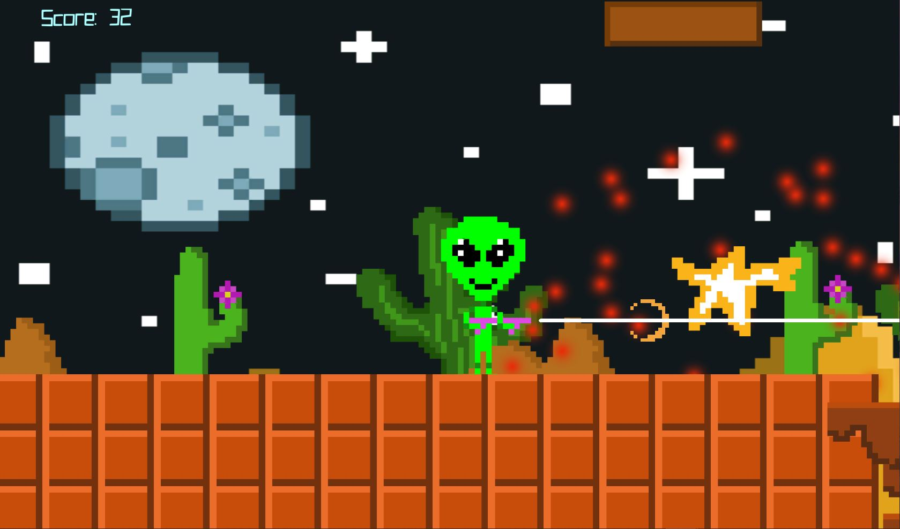

Alien Attacks! (Video Game Prototype)

My role was: Programmer
Game Credits
I would like to credit and thank Brackeys for providing the starter template and the shooting at enemy tutorial. And Alexander Zotov for his series of videos of how to add a score, blood effects, game overs etc.
Known Issues
- The Player does not explode when it touches the enemy. It just brings up the "Game Over" Screen
- Game continues even after a game over.
- Players had some difficulty getting on the structures.
- Issues with Tittle Screen.
- 2nd Enemy clas not working as intended
The game overall, still needs some work. Whenever the alien touches the officer he does not explode as intended. This might be due to the officers not moving, so I will implement that to see if that fixes the issue. Players were still having quite some difficulty killing officers and jumping to the structures… which I found very weird considering the officers don’t shoot. Only 1 person out of around 7 or people I’ve seen, have actually made it to the end. Which calls for modification to the level. But aside from that I’m glad the game over screen actually works and the officer exploding animation looks as planned. We have opted out from having the officers shoot and will now make them only move or jumpable.